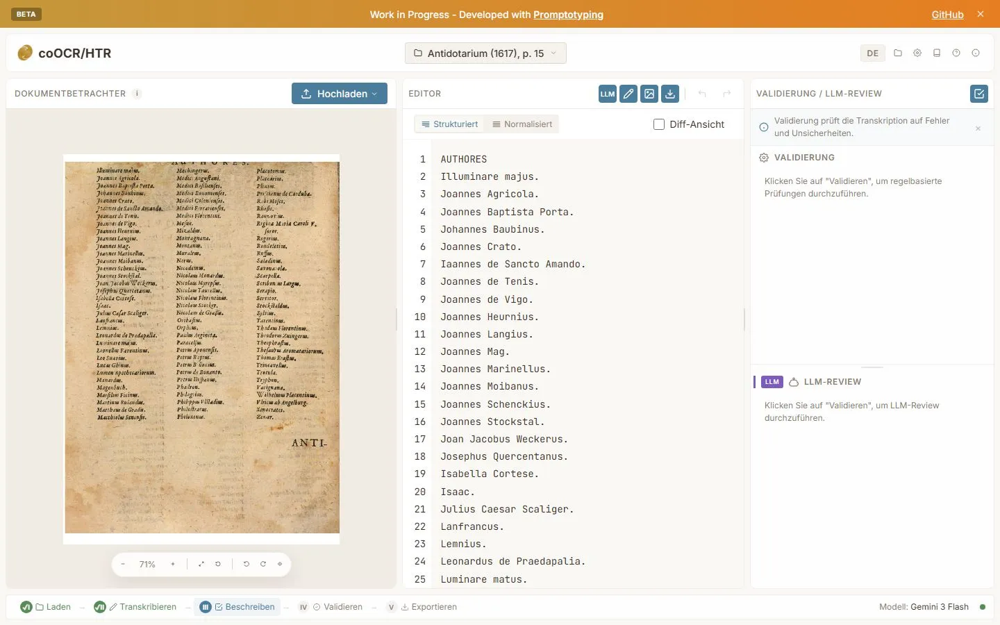
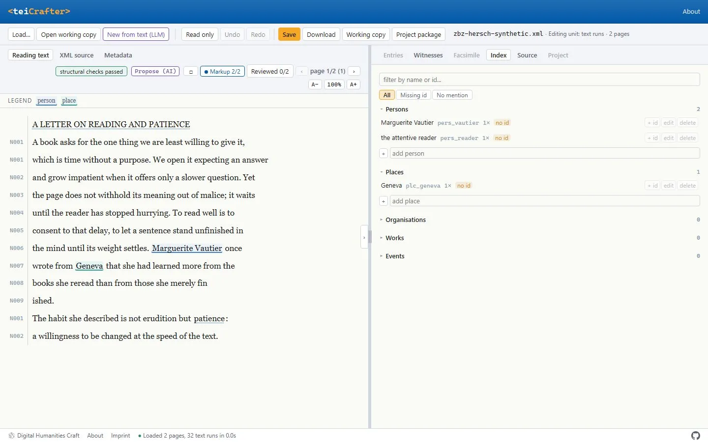
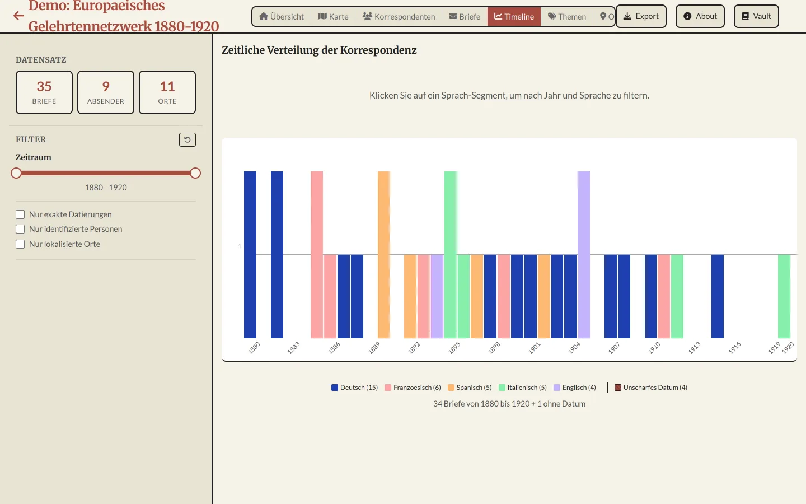
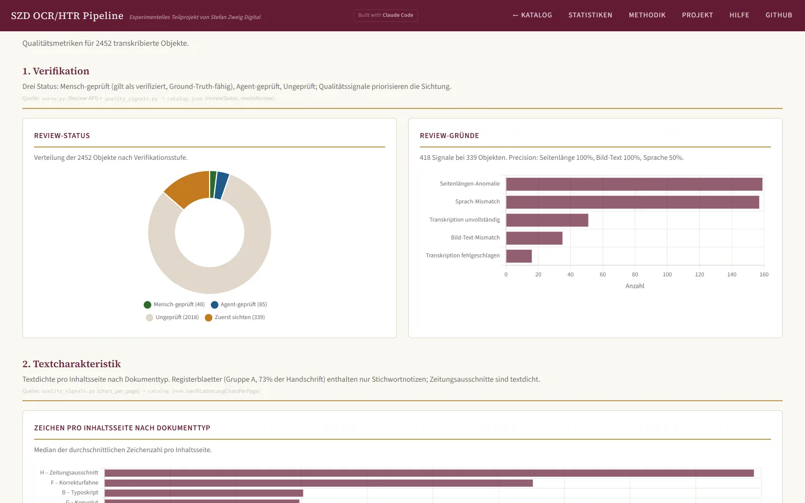
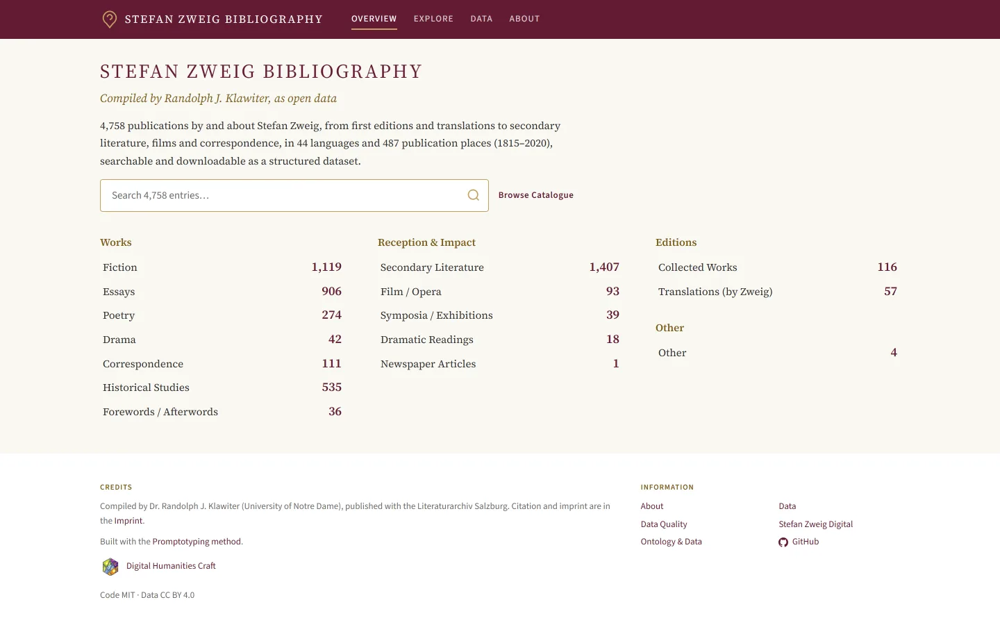
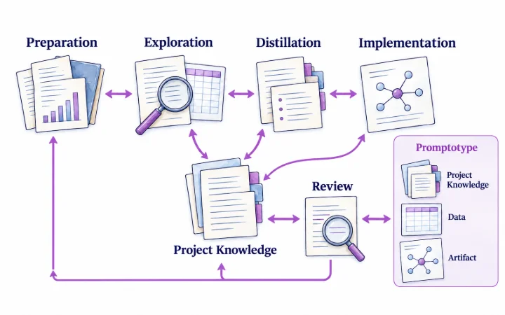
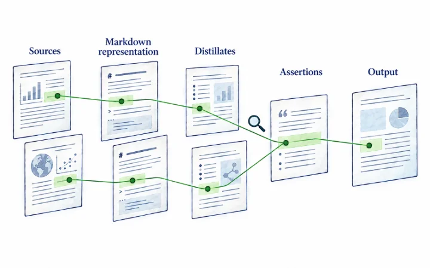
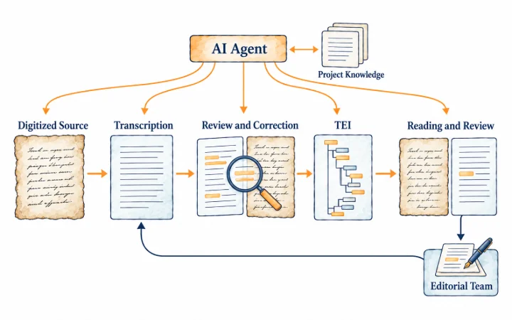
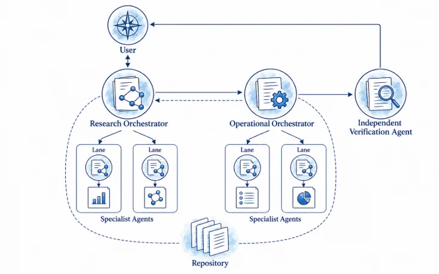

coOCR/HTR
Erkennt den Text alter Drucke und Handschriften und lässt jede Lesung am Seitenbild prüfen.
Wir bauen mit Frontier-Sprachmodellen und Coding-Agenten Werkzeuge, Workflows und Wissensbasen für Ihren Arbeitsablauf, für Sie, mit Ihnen oder in einem Training. Jedes Ergebnis wird an Ihren Daten geprüft und so dokumentiert, dass andere daran weiterarbeiten können.
Ihr Team lernt in Workshops und Intensivtagen, selbst mit Coding-Agenten und Wissensbasen zu arbeiten.
Wir entwickeln mit Ihrem Team an Ihren Daten. Die Wissensbasis bleibt bei Ihnen, damit Sie selbst weiterbauen können.
Wir bauen das Werkzeug, von der kleinen Anwendung für einen Arbeitsschritt bis zur Pipeline mit mehreren Agenten.
Frontier-Sprachmodelle setzen wir an zwei Stellen ein. Mit Coding-Agenten bauen wir Ihr Werkzeug, und im fertigen Werkzeug übernehmen Modelle einzelne Arbeitsschritte wie Texterkennung, Auszeichnung oder das Erzeugen von Daten.
In beiden Fällen kommen kommerzielle wie offene Modelle in Frage, bis hin zum Betrieb auf eigener Hardware. Welches Modell und welchen Zugang ein Projekt nutzt, entscheiden wir mit Ihnen nach Art der Daten. Zum Bauen genügen meist einige Beispieldateien, die sich auch anonymisieren lassen.
Abgerechnet wird so, wie es zur Aufgabe passt, nach Stunden, als einzelne Arbeitstage oder als Pauschale. Nennen Sie uns Ihren Rahmen. Nach der Sichtung sagen wir, was dafür möglich ist, und Sie entscheiden nach jedem Schritt, ob es weitergeht.

Erkennt den Text alter Drucke und Handschriften und lässt jede Lesung am Seitenbild prüfen.

Bearbeitet TEI-XML als lesbaren Text und prüft beim Speichern gegen das Schema.

Zeigt Briefmetadaten aus CMIF als Karte, Zeitleiste und Netzwerk, damit sichtbar wird, wer wem wann von wo schrieb.

Transkribiert einen ganzen Nachlass und vermerkt an jedem Objekt, ob Maschine, Agent oder Mensch es geprüft hat.

Rettet eine Bibliographie aus einem stillgelegten Wiki in Forschungsdaten, in denen jede Angabe ihre Quellseite behält.

Promptotyping entwickelt Forschungsartefakte mit KI-Agenten aus einer gepflegten Wissensbasis heraus.

Grounded Vault führt jede tragende Aussage eines Berichts über einen prüfbaren Anker bis zur Quellstelle.

Die Agentic Edition Pipeline führt Digitalisate über Transkription und Prüfung zu TEI und einer statischen Leseansicht.

Research Mission Control verteilt Klären, Umsetzen und Prüfen auf KI-Agenten an einem gemeinsamen Repository.
Wir arbeiten nach der Methode Promptotyping. Anforderungen, Datenmodell und Entwurfsentscheidungen stehen schriftlich im Projekt und bleiben für spätere Änderungen nachvollziehbar.
Geprüft wird mit Ihren eigenen Dateien, besonders das verlustfreie Zurückschreiben in die Ausgangsdateien, Grenzfälle und die Validierung gegen Ihr Schema. Die Ergebnisse protokollieren wir.
Coding-Agenten schreiben den Großteil des Codes. Wir prüfen ihn gezielt auf die Fehler, die bei agentisch erzeugter Software gehäuft auftreten, etwa ungeschützte Ausgabe von Daten, still verschluckte Fehler und Funktionen, die nur die Dokumentation kennt, und erproben jedes Werkzeug im echten Browser.
Wir speichern in offenen Formaten, in der Forschung etwa TEI, IIIF und RDF. Ihre Daten bleiben damit auch ohne das Werkzeug nutzbar.
Setzt ein Werkzeug Large Language Models ein, sind deren Vorschläge gekennzeichnet und werden erst mit der Zustimmung Ihrer Fachleute übernommen.
Sie erhalten den vollständigen Quellcode und eine Dokumentation, mit der Ihr Team, eine externe Entwicklerin oder ein KI-Assistent weiterarbeiten kann. Forschungsdaten archivieren wir auf Wunsch langfristig im zertifizierten Repositorium GAMS, in Kooperation mit dem Institut für Digitale Geisteswissenschaften der Universität Graz.
Digital Humanities Craft ist ein Unternehmen aus der Forschung der Digitalen Geisteswissenschaften mit Sitz bei Graz. Wir entwickeln Forschungssoftware und digitale Editionen, unterrichten an Universitäten in ganz Europa und arbeiten als Partner in Förderprojekten. Team und Projekte auf dhcraft.org
Sie zeigen uns den Arbeitsablauf mit echten Dateien, wir sagen, was in Ihrem Rahmen möglich ist.
Ziel, Daten und Prüfkriterien halten wir schriftlich fest.
Sie erproben eine erste lauffähige Fassung im Arbeitsalltag.
Ihre Fachleute prüfen gegen die vereinbarten Kriterien.
Sie erhalten Werkzeug, Quellcode und Dokumentation.
Schildern Sie uns kurz Ihren Arbeitsablauf. Hilfreich sind diese Angaben:
office@dhcraft.org
Schicken Sie uns, was Sie bereits haben. Daraus bauen wir einen ersten Prototyp, an dem sich das Vorhaben konkret besprechen lässt.